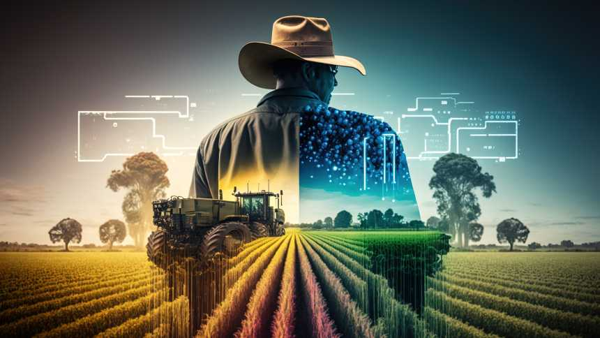

Ações que transformam o mundo!
Agrinho: Cultivando Conhecimento, Colhendo Futuro
Bem-vindos ao Agrinho, um programa educacional que semeia conhecimento e colhe um futuro brilhante! Aqui, cultivamos valores como a sustentabilidade, o respeito à natureza, o amor pelo campo e a valorização da educação.
Quem Somos? O Agrinho é um projeto desenvolvido por meio de uma parceria entre o setor agrícola e a educação, com o objetivo de levar aprendizado, conscientização e alegria para as escolas rurais e urbanas de todo o país. Desde sua criação, temos o compromisso de fomentar o desenvolvimento sustentável, conectando o campo à cidade e contribuindo para a formação de cidadãos críticos e responsáveis. Nossa Missão Nossa missão é estimular a educação, promover a agricultura sustentável e despertar o interesse pela natureza, alimentação saudável e práticas agrícolas responsáveis. Queremos inspirar a próxima geração a ser protagonista de um futuro mais consciente, equilibrado e próspero. O que Oferecemos? No Agrinho, oferecemos uma série de atividades educacionais, lúdicas e interativas para alunos, professores e comunidades. Nossos materiais didáticos são especialmente desenvolvidos por especialistas e educadores comprometidos em criar um ambiente de aprendizado significativo. Concurso Agrinho: Estimulamos a criatividade e o talento dos alunos com o Concurso Agrinho, onde eles têm a oportunidade de expressar suas ideias por meio de desenhos, redações, projetos audiovisuais e muito mais. Visitas ao Campo: Proporcionamos a experiência única de visitas às propriedades agrícolas, permitindo que os estudantes conheçam de perto as práticas agrícolas sustentáveis, estreitando o vínculo entre a cidade e o campo. Cursos e Capacitações: Investimos na formação de professores e educadores, oferecendo cursos e capacitações que abordam temas como educação ambiental, alimentação saudável, economia circular e muito mais. Ações Sustentáveis: Incentivamos a realização de projetos sustentáveis nas escolas, que ajudam a criar um ambiente mais consciente, ecológico e solidário.
Nossa Visão para o Futuro
No Agrinho, sonhamos com um futuro em que cada criança e adolescente seja protagonista de sua própria história, construindo um mundo mais sustentável e justo. Acreditamos que o conhecimento é a semente do progresso e que, ao educar com base em valores éticos e ambientais, colheremos frutos de paz, prosperidade e harmonia com a natureza. Junte-se a nós nessa jornada rumo a um futuro promissor! Vamos cultivar o conhecimento, regar as ideias e colher um mundo melhor para todos. O Agrinho é uma iniciativa coletiva, e cada um de vocês é essencial nessa missão. Vamos juntos plantar um futuro sustentável e colher uma geração de cidadãos conscientes e comprometidos com a vida em sua essência!